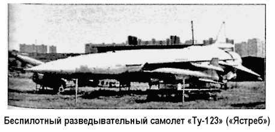

Разведывательный самолет «Ту-123» («Ястреб»)
В конце 1950-х годов в связи с нарастанием угрозы внезапного ядерного удара со стороны США руководство Советского Союза приняло решение создать систему дальней беспилотной фото- и радиоразведки под шифром «Ястреб». Ответственность за решение этой задачи возложили на ОКБ Андрея Туполева.
Конструкторам ОКБ поручалось на основе опытного беспилотного самолета «Ту-121» спроектировать дальний беспилотный разведчик. В отличие от исходного самолета, в соответствии с новым назначением этот аппарат должен был оборудоваться аппаратурой фото- и радиоразведки, системами привода в заданную точку и спасения полученных разведывательных материалов. Дополнительно бюро поручалось проработать возможность многоразового использования перспективного разведчика.
Постановлением Совета министров от 16 августа 1960 года задавались необычайно жесткие сроки на создание системы заводские летные испытания должны были начаться в третьем квартале 1960 года, совместные испытания — через год, а уже в 1961 году завод № 64 в Воронеже должен был выпустить 18 серийных машин.
Новый беспилотный самолет-разведчик получил по ОКБ старое обозначение: самолет «123» («Ту-123») или «ДБР-1» («Дальний беспилотный разведчик»).
При проектировании «Ту-123» и системы «Ястреб» конструкторы столкнулись с целым рядом специфических проблем.
Помимо необходимости создания высокоточной разведывательной аппаратуры, сложнейшего навигационного комплекса и эффективной парашютной посадочной системы спасения носового отсека, нужно было продумать и обеспечить автономность базирования и применения самолета в условиях, «неподготовленных в инженерном отношении», решить задачу перебазирования его элементов своим ходом на расстояние до 500 километров с сохранением боеспособности, создать ряд систем автоматической проверки бортового оборудования, разработать и проверить на практике идеологию различных этапов эксплуатации разведчика, подготовить на этой базе необходимую эксплуатационную документацию для строевых частей.
В результате на свет появился уникальный разведывательный комплекс, ставший прототипом для ракетопланов конструкции Туполева.

«Ту-123» представлял собой цельнометаллический моноплан нормальной аэродинамической схемы с треугольным крылом. Габариты: длина самолета — 27,835 метра, высота — 4,781 метра, размах крыла — 8,414 метра, взлетная масса с ускорителями — 35 610 килограммов, масса пустого — 11 450 килограммов.
Крыло «Ястреба» не имело механизации и каких-либо рулевых поверхностей, его внутренние объемы не использовались.
Снизу-сзади на консолях крыла крепились антенны аппаратуры радиоуправления. Хвостовое оперение состояло из трех цельноповоротных рулевых поверхностей, ориентированных под углом 120° друг к другу и установленных на специальных наплывах, в которых размещались электрические рулевые машинки с водяным охлаждением. Эти поверхности управляли самолетом по трем каналам.
Фюзеляж типа монокок изготавливался из шести секций.
Носовая часть массой 2800 килограммов выполнялась спасаемой на парашютной системе. Она соединялась с хвостовой частью четырьмя пневмозамками. В ней размещалась разведывательная аппаратура, система кондиционирования, часть агрегатов воздушной системы, электро- и радиооборудование, четыре опоры шасси и основной посадочный парашют.
Для обеспечения доступа к этому оборудованию носовая часть имела два эксплуатационных разъема. Она хранилась и транспортировалась отдельно, в специальном закрытом полуприцепе с необходимым для разведаппаратуры микроклиматом, а при подготовке к полету с помощью подъемного крана пристыковывалась к самолету.
В неспасаемой хвостовой части фюзеляжа находились силовая установка, топливные баки, автопилот, агрегаты воздушной системы, энергоузел и тормозной парашют.
Маршевый турбореактивный двигатель «КР-15» (короткоресурсный вариант двигателя «Р-15Б») имел нерегулируемое эжекторное сопло и работал на форсажном режиме на протяжении всего полета, развивая тягу в 10 тонн. На нижней поверхности хвостовой части располагался нерегулируемый сверхзвуковой воздухозаборник с неподвижным полуконусом.
Для обеспечения устойчивой работы двигателя на дозвуковых скоростях к обечайке воздухозаборника снаружи пристыковывался специальный коллектор в форме полукольца, который при достижении околозвуковых скоростей отстреливался. Одновременно с маршевым турбореактивным двигателем на начальном этапе полета работали два твердо топливных ускорителя тягой по 75 тонн, установленные под крылом у бортов фюзеляжа. Оканчивалась хвостовая часть эжекторным соплом. Сверху был установлен контейнер с тормозным парашютом, снизу — подфюзеляжный гребень.
Предполетная подготовка и запуск «Ястреба» производились на стартовой установке «СУРД-1», которая могла буксироваться тягачом «МАЗ-537». Перед пуском выполнялись предусмотренные проверки бортовых систем и в автопилот вводилась заранее рассчитанная программа полета. Самолет поднимался в стартовое положение под углом 12° к горизонту.
Включался маршевый двигатель и выводился на максимальный, затем на форсажный режим работы. Самолет при этом удерживался на установке единственным специальным болтом.
Далее командир стартового расчета производил пуск. Одновременно срабатывали оба пороховых ускорителя, и аппарат, срезая спецболт, сходил с установки. Через несколько секунд после старта отработавшие ускорители отстреливались.
Далее разведчик летел в автоматическом режиме.
На завершающем этапе полета самолет управлялся, как правило, в ручном режиме, с помощью бортовых и наземных радиотехнических средств. Это позволяло точнее вывести аппарат в район посадки. Над выбранным местом подавались радиокоманды на выключение маршевого двигателя, слив остатков топлива, перевод «Ястреба» в набор высоты для гашения скорости и выпуск тормозного парашюта. После этого производилось отделение от самолета носовой части, выпуск ее посадочных опор и основного парашюта, обеспечивающих безопасное приземление этого отсека.
Хвостовая часть самолета опускалась на землю на тормозном парашюте с большой вертикальной скоростью и при ударе о землю деформировалась так, что повторно быть использована не могла. При проектировании «Ту-123» предполагалось многократное использование его носовой части.
Однако на практике для каждого полета целиком готовился новый самолет.
Существовавший задел по беспилотному самолету «Ту-121» позволил в короткие сроки подготовить к испытаниям первые экземпляры «Ястреба» для заводских и совместных испытаний. Заводские испытания были закончены в сентябре 1961 года, государственные испытания — в декабре 1963 года.
На основании положительных результатов этих испытаний постановлением Совета министров от 23 мая 1964 года система дальней беспилотной фото- и радиотехнической разведки «Ястреб» была принята на вооружение советских ВВС.
Серийное производство беспилотного самолета «Ту-123» и других элементов системы продолжалось в Воронеже до 1972 года; всего было построено 52 экземпляра. Полеты «Ястреба» с целью проверки и поддержания практических навыков специалистов обслуживающих частей проводились, как правило, только на крупных советских полигонах, а маршрут прокладывался над малонаселенными районами СССР.
Если из-за отказа бортовой аппаратуры самолет отклонялся от маршрута с тенденцией ухода за пределы полигона, производилась его ликвидация: с земли поступала радиокоманда на выключение двигателя и перевод машины в пикирование с глубоким креном.
Система состояла на вооружении разведывательных подразделений ВВС, дислоцировавшихся в западных приграничных военных округах, до 1979 году. После принятия на вооружение в 1972 году разведчика «МиГ-25Р» комплексы «ДБР-1» постепенно стали снимать с эксплуатации.
Создание самолетов «Ту-121», «Ту-123» и системы «Ястреб» заложило основы по аэродинамическим расчетам беспилотных самолетов с учетом законов автоматического управления, специфики проектирования и изготовления бортового оборудования и, прежде всего, по системам навигации и управления, технологии изготовления и отработки в производстве беспилотных летательных аппаратов, их испытаний и доводки.
На основе самолета «Ту-123» было подготовлено несколько интересных проектов. Среди них — беспилотный caмолет-мишень «Ту-123М» («Ястреб-М»), полностью спасаемый самолет «Ту-139» («Ястреб 2»), проект самолета «Ту-123» с ядерной силовой установкой, проект самолета «Ту-123» с прямоточными воздушно-реактивными двигателями, рассчитанный на скорости в 3 или 4 Маха. Рассматривался и пилотируемый вариант возвращаемого разведчика «Ту-123П» («Изделие 141», «Ястреб-П»). Однако для нас наибольший интерес представляет проект использования самолетов «Ту-123» в качестве последней ступени ударной ракетной планирующей системы «Ту-130».